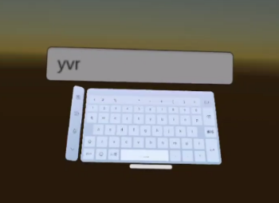

系统键盘
系统键盘功能让开发者可以在应用能直接使用 Dream OS 中能提供的系统键盘进行文字的输入，而不需要自己开发键盘。其原理是系统将监听应用需要唤醒键盘的事件，并在这种情况下通过 焦点感知 功能唤醒键盘。
使用示例
Tip
下示例核心是创建一个 Unity 的 InputField，并在场景中使用系统键盘进行输入。
在 Hierarchy 面板下，完成以下步骤：
- 选择 + > UI > Event System 将事件系统添加至场景中
- 选择 + > UI > Canvas 将画布添加至场景中
选中 Canvas 并在 Inspector 面板下，完成以下步骤：
- 将 Render Mode 设置为 World Space
- 将 Event Camera 将为 Main Camera
- 将 Tracked Device Graphics Raycast 脚本添加至 Canvas
在 Hierachy 面板下，右击 Canvas 并选择 UI > Input Field - TextMeshPro 从快捷菜单中将输入字段加到场景中。
打包应用至真机，并在真机上点击 Input Field，此时将看到系统键盘弹出。

Note
系统键盘功能在 Editor 下无法使用